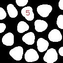
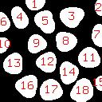

Demo Script
Image reading and labeling
The binary image is read and then labeled. The number of blobs is measured as the maximum label value. Both images are displayed.
>>> f = mmreadgray('blob3.tif')
>>> fr = mmlabel(f)
>>> mmshow(f)
>>> mmlblshow(fr,'border')
>>> nblobs=mmstats(fr,'max')
>>> print nblobs
18.0
 |
 |
|
| f | fr,'border' |
Centroids
The centroids are computed from the labeled image. After, the centroid image is labeled, so that each centroid point has a label value varying from 1 to the maximum number of blobs. For display illustration, the centroids are overlayed on the original blob image on the left and the labeled centroids are enlarged and displayed on the right.


Placing a number on a particular blob
To place a particular number on a particular blob, a number image is generated using the mmtext function and converted to a structuring element. A particular centroid is selected by comparing the image with the labeled number. This output image is a binary image with a single point at that centroid. Dilating this image by the structuring element will "stamp" the structuring element on the centroid.
>>> fbin = mmcmp(cr,'==',uint16(5))
>>> f5 = mmtext('5')
>>> print f5
[[0 0 0 0 0 0 0 0 0] [0 0 0 0 0 0 0 0 0] [0 1 1 1 1 1 1 1 0] [0 1 0 0 0 0 0 0 0] [0 1 0 0 0 0 0 0 0] [0 1 0 1 1 1 1 0 0] [0 1 1 0 0 0 0 1 0] [0 0 0 0 0 0 0 1 0] [0 0 0 0 0 0 0 1 0] [0 0 0 0 0 0 0 1 0] [0 1 0 0 0 0 0 1 0] [0 0 1 1 1 1 1 0 0] [0 0 0 0 0 0 0 0 0] [0 0 0 0 0 0 0 0 0] [0 0 0 0 0 0 0 0 0]]
>>> b5 = mmimg2se(f5)
>>> fb5 = mmdil(fbin,b5)
>>> mmshow(mmdil(fbin))
>>> mmshow(f,fb5)
 |
 | |
| mmdil(fbin) | f,fb5 |
{kind=link}
Placing a label number to each labeled blob
To automate the process just described, a loop scans every label value and "stamp" its number in a final image. The stamps are accumulated with the mmunion function. The area is computed and plotted against each label blob number.
>>> facc=mmsubm(f,f)
>>> for i in range(1,nblobs+1): fbin = mmcmp(cr,'==',uint16(i)) fi = mmtext(str(i)) bi = mmimg2se(fi) fbi = mmdil(fbin,bi) facc = mmunion(facc,fbi)
>>> mmshow(f,facc)
>>> darea = mmblob(fr,'area','data')
>>> mmplot([[darea]], [['style','impulses']])
|  |  |
|
| f,facc | [[darea]], [['style','impulses']] |
{kind=link}